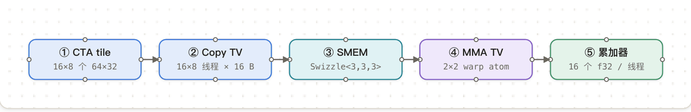
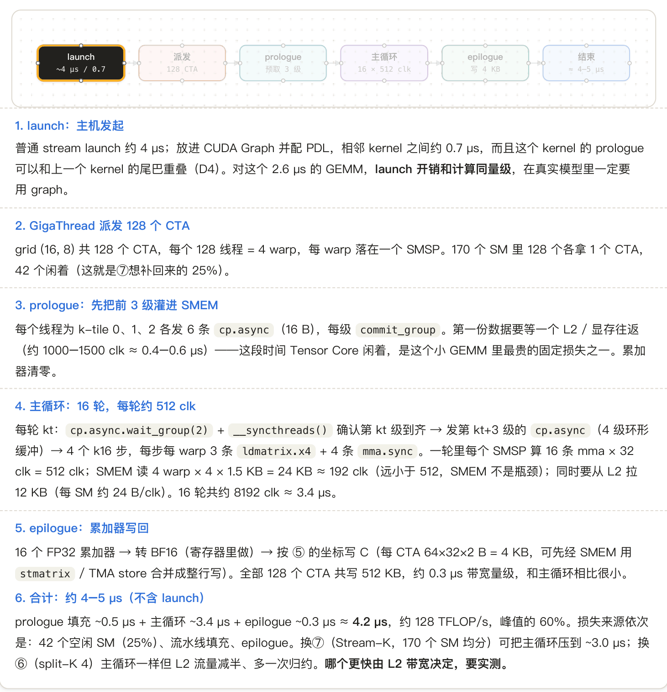

端到端例子：A[1024×1024] · B[1024×256] 在 RTX 5090 上怎样定配置、怎样运行
用一个具体问题把前面所有东西串起来：A 是 1024×1024，B 是 1024×256，在 RTX 5090 上算 C= A·B（BF16 输入、FP32 累加、BF16 输出）。从“这个问题有多大”开始，比较 7 种 tile / warp /split-K 方案各自卡在哪里，选定一个方案后把五个映射（CTA tile、Copy TV、SMEM swizzle、MMA fragment、累加器）逐个写出具体坐标，最后按时间顺序走一遍 kernel 怎样运行。映射里的坐标都是用真实 CuTe 在主机上打印出来的。
0. 问题本身：先算它有多大
| 量 | 值 | 怎么算 |
|---|---|---|
| 形状 | M = 1024，K = 1024，N = 256 | A 是 M×K，B 是 K×N，C 是 M×N = 1024×256 |
| 存储 | A 按 K 连续；B 按 N×K、K 连续存（“TN”，和本套练习一致） | 如果 B 是普通的 K×N 行主序（N 连续），读 B 时要用 ldmatrix.trans ，见第 4 节 |
| FLOP | 2·M·N·K = 5.37 亿 | |
| 最少字节 | A 2 MB + B 0.5 MB + C 0.5 MB = 3 MB | BF16 每元素 2 B |
| 整体强度 | 5.37 亿 / 3.1 MB ≈ 171 FLOP/B | 高于 5090 机器平衡 117 → 理论上 compute-bound |
| 理想计算时间 | 5.37 亿 / 209.5 TF ≈ 2.56 µs | = 每 SM 6168 clk（170 个 SM 完全均分） |
| 理想访存时间 | 3 MB / 1792 GB/s ≈ 1.7 µs | 只读一遍；L2（96 MB）装得下全部操作数 |
| kernel 启动 | stream ~4 µs，graph + PDL ~0.7 µs | 比计算本身还长 |
这是一个“小 GEMM”：总计算只有 2.6 µs，比一次普通 launch 还短。它的难点不是 tile 内部的效率，而是 怎样把只有 2.6 µs 的工作均匀铺到 170 个 SM 上。输出只有 1024×256，按 128×128 切只有 16 块——这决定了后面所有选择。
1. 哪些参数已经定死
| 层 | 参数 | 在这个例子里 |
|---|---|---|
| 硬件 | 170 SM、每 SM 4 个 SMSP、warp = 32、SMEM ≤ 99 KB/ CTA、65536 寄存器 / SM | 不变 |
| 指令 | BF16 → mma.sync.m16n8k16 （FP32 累加）；ldmatrix 8×8 b16；cp.async 最宽 16 B |
tile 必须是 (16, 8,16) 的倍数 |
| BK（默认值，不是硬件常数） | BF16 时一行 64 × 2 B = 128 B，正好是一个 swizzle atom 的宽度 | BK = 64（推导见下） |
| warp 数 | 每 CTA 取 4 的倍数（每个 SMSP 至少一个 warp） | 4 或 8 |
两个约束正好在 64 相遇。下限：一行 BK × 2 B 至少要 128 B，才能用满一条 cache line，也才能用最宽的 128 B swizzle。上限：128×128 tile 每级 stage = (128 + 128) × BK × 2 B，BK = 64 时是 32 KB，99 KB 放得下 3 级；BK = 128 时只放得下 1 级。tile 变小时上限会放宽，本例的 64×32 tile 用 BK = 128 也可以。
真正要选的只有：BM × BN、warp 排列、stage 数、要不要 split-K / Stream-K。
2. 七种方案逐个算
前提：BK = 64，cp.async 或 TMA 搬运，所有 CTA 一波跑完（tile 都 ≤ 170 × 驻留数）。“每 CTA 计算”假设这个 CTA 独占一个 SM 的 4 个 Tensor Core：2·BM·BN·K_cta / 512 FLOP/clk。
| # | CTA tile | warp | split-K | CTA 数 | 每 CTA 的 k-tile | 每 CTA 计算 | 用到的 SM | 每线程累加器 | L2→SM 总流量 | 额外开销 |
|---|---|---|---|---|---|---|---|---|---|---|
| ① | 128×128 | 8（2×4） | 1 | 16 | 16 | 65536 clk = 27.2 µs | 16/170 | 64 | 8 MB | 无 |
| ② | 128×64 | 4（2×2） | 1 | 32 | 16 | 32768 clk = 13.6 µs | 32 | 64 | 12 MB | 无 |
| ③ | 64×64 | 4（2×2） | 1 | 64 | 16 | 16384 clk = 6.8 µs | 64 | 32 | 16 MB | 无 |
| ④ | 64×32 | 4（2×2） | 1 | 128 | 16 | 8192 clk = 3.4 µs | 128 | 16 | 24 MB | 无 |
| ⑤ | 32×32 | 4（2×2） | 1 | 256 | 16 | 86 个 SM 各跑 2 个 → 8192 clk = 3.4 µs | 170 | 8 | 32 MB | 无 |
| ⑥ | 128×64 | 4（2×2） | 4 | 128 | 4 | 8192 clk = 3.4 µs | 128 | 64 | 12 MB | 4 份 FP32 部分和（4 MB）要归约 |
| ⑦ | 64×64 | 4（2×2） | Stream-K | 170 | 1024 个 k-tile 均分， | 7168 clk = 3.0 µs | 170 | 32 | 16 MB | 跨 CTA 的部分 tile |
| 每 SM 6–7 个 | 要修补 |
读这张表的方法：
- ①→④：tile 越小，CTA 越多，用到的 SM 越多，时间几乎按 CTA 数反比下降。 每个 CTA 的计算量是 BM·BN·K，大 tile 让少数 SM 干全部活。
- ④、⑤、⑥ 的计算时间一样（8192 clk）：它们都相当于“128 个 SM 的工作量”（5.37 亿 / 128 / 512 = 8192）。⑤ 有 256 个 CTA，但 170 个 SM 放不平：86 个 SM 要跑 2 个，最慢的 SM 决定总时间。
- ⑦ 最接近理想的 6168 clk：Stream-K 不按 tile 分工，而是把所有 (tile, k-tile) 单元平均分给 170 个 SM；剩下的 7168− 6168 是 1024 个单元 ÷ 170 的取整损失。
- 代价在流量上：tile 越小，同一块 A / B 被越多 CTA 重复读。总 L2→SM 流量 = Σ (BM+BN)·K_cta·2 B：①只要 8 MB，⑤要 32 MB。显存只读 3 MB（其余都命中 L2），但 L2 带宽要扛 24 MB / 3.4 µs ≈ 7 TB/s（④）。NVIDIA 没有公开 5090 的 L2 带宽，这一项要用 Nsight Compute 的
lts__t_bytes实测；如果 L2 扛不住，⑥（12 MB）会比④快。 - split-K（⑥）：把 K = 1024 切成 4 段，每个 CTA 只做 256 的 K（4 个 k-tile），tile 保持 128×64 的高复用；代价是 4 份 FP32 部分和（每份 1024×256×4 B = 1 MB）要写出再归约，在 L2 里完成大约多 0.5–1 µs。
影响
变大 tile
变小 tile
split-K / Stream-K
SM 利用率（用到几个 SM）
↓
↑
↑
每字节的复用（tile 强度↑（128×128 → ↓（32×32 → 16）不变BM·BN/(BM+BN)） 64）
L2 → SM 流量
基本不变，另加部分和
↓
↑
SMEM 读 / 计算比
↓
↑（5090 上仍 < 不变1，不是瓶颈）
每线程累加器 / 寄存器
不变
↑
↓
每个 k-tile 的计算时间（要隐藏↑ → 需要的↓ → 需要更多每 CTA k-tile 更少 → 的延迟不变）
stage 少
stage
流水线填充占比更大
3. K 方向：BK、stage 数和 k-tile 数怎样互相影响
K = 1024 固定。BK 决定 K 循环多少轮，每轮的计算时间决定要预取几级才能藏住显存 / L2 延迟（约 1000–1500 clk）：
| tile | BK | k-tile 数 | 每 k-tile 计算 | 每级 stage 字节 | 至少要提前几级 ≈ 延迟 / 计算 | 建议 stage |
|---|---|---|---|---|---|---|
| 128×128 | 64 | 16 | 4096 clk | 32 KB | < 1 | 2–3（99 KB 最多 3） |
| 64×32 | 32 | 32 | 256 clk | 6 KB | ~5 | 6+，barrier 次数翻倍 |
| 64×32 | 64 | 16 | 512 clk | 12 KB | ~3 | 4（48 KB） |
| 64×32 | 128 | 8 | 1024 clk | 24 KB | ~1.5 | 3（72 KB），但每 CTA 只有 8 轮 |
| 128×64 split-K 4 | 64 | 4 | 2048 clk | 24 KB | < 1 | 2；流水线填充（第一级要等~1500 clk）占 4 轮里的一大块 |
规律：
- 小 tile 每轮算得快，同样的延迟要更多级 stage 去藏；5090 的 SMEM 小，但小 tile 每级也小，64×32 用 4 级只要 48 KB。
- BK 太小：barrier /
cp.async.wait_group的次数翻倍；BK 太大：每 CTA 的 K 轮数变少，开头“第一级数据还没到”的等待占比变大。BK = 64 是 BF16 的默认点。 - split-K 让每个 CTA 的 K 轮数变少：⑥ 每 CTA 只有 4 轮，填充损失明显；所以 split-K 的段数不能切得太碎。
4. 选定方案 ④，把五个映射写出来
选 ④（64×32×64，4 个 warp，4 级 stage）：结构最简单、无归约，128 个 CTA 一波跑完；是否换成 ⑥ / ⑦ 要等实测 L2 带宽再定。下面的坐标都来自 playground/e2e_1024x1024x256.cpp （真实 CuTe，主机上运行：playground/run.sh playground/e2e_1024x1024x256.cpp ）。CuTe 的写法沿用 sgemm_sm80.cu 的 TN 配置，只把 tile 改小、类型改成 BF16 /FP32 累加。

① CTA tile：谁算哪一块
grid = (ceil(1024/64), ceil(256/32)) = (16, 8) = 128 个 CTA，一波（170 个 SM 里用 128 个）
CTA (bm, bn) 负责 C[64·bm : 64·bm+64, 32·bn : 32·bn+32]
第 kt 个 k-tile（kt = 0..15）读 A[64·bm : +64, 64·kt : +64] 和 B[32·bn : +32, 64·kt : +64]（
CuTe：gA = local_tile(mA, (64, 64), (bm, _)) → 形状 (64, 64, 16)
gB = local_tile(mB, (32, 64), (bn, _)) → 形状 (32, 64, 16)
复用关系：A 的一条 64 行 panel（64×1024 = 128 KB）被同一行的 8 个 CTA 读；B 的一条 32 行 panel（64 KB）被同一列的 16 个 CTA 读。它们几乎同时在跑，所以重复读都命中 L2——显存只读一遍 3 MB，L2→SM 是 24 MB。
② Copy TV：哪个线程搬哪 16 字节
ThrLayout = (16,8):(8,1) 、ValLayout = (1,8) 、atom = SM80_CP_ASYNC_CACHEALWAYS<uint128_t> ：每 8 个线程排满一行（8 × 16 B = 128 B = BK 一整行），128 个线程一次覆盖 16 行。
| 线程 | A tile（64×64）里的 4 个起点 | B tile（32×64）里的 2 个起点 |
|---|---|---|
| 0 | (0,0) (16,0) (32,0) (48,0) | (0,0) (16,0) |
| 1 | (0,8) (16,8) (32,8) (48,8) | (0,8) (16,8) |
| 8 | (1,0) (17,0) (33,0) (49,0) | (1,0) (17,0) |
| 9 | (1,8) (17,8) (33,8) (49,8) | (1,8) (17,8) |
| 127 | (15,56) (31,56) (47,56) (63,56) | (15,56) (31,56) |
每个起点向 K 方向连续 8 个 bf16。一个 warp 的一条 cp.async 覆盖 4 行 × 128 B = 4 条完整的 128 B line = 16 个 sector，100% 有效。每个 k-tile 每线程发 4 + 2 = 6 条 cp.async ，一个 CTA 共 768 条，搬 8 KB + 4 KB = 12 KB。换成 TMA 就是一个线程发两条：box (64, 64) 和 (32, 64)，expect_tx = 12288 字节。
③ SMEM layout：元素放在哪里
atom = Swizzle<3,3,3> ∘ (8,(8,8)):(8,(1,64)) 8 行 × 64 列 bf16 = 1 KB
sA = tile_to_shape(atom, (64, 64, 4)) 4 级 × 8 KB = 32 KB
sB = tile_to_shape(atom, (32, 64, 4)) 4 级 × 4 KB = 16 KB 共 48 KB ≤ 99
atom 内部，把列号拆成 16 B 块号 j = c / 8 （0..7）：偏移 = 64·j + 8·(r ⊕ j) + c % 8，再按 8 行一个 atom 沿 M 堆叠（第 8 行从 512 开始）。真实 CuTe 打出的偏移：
| (r, c) | (r,0) | (r,8) | (r,16) | (r,56) | (r,63) |
|---|---|---|---|---|---|
| r = 0 | 0 | 72 | 144 | 504 | 511 |
| r = 1 | 8 | 64 | 152 | 496 | 503 |
| r = 2 | 16 | 88 | 128 | 488 | 495 |
| r = 7 | 56 | 112 | 168 | 448 | 455 |
| r = 8 | 512 | 584 | 656 | 1016 | 1023 |
意义：ldmatrix 一次读 8 行的同一个 16 B 块（比如第 0 块），这 8 个块落在 16 B bank 组 0,1,2,…,7，各不相同 → 无 bank conflict；cp.async 写入时同一行的 8 个线程写 8 个块，落在 bank 组 r ⊕ j（j = 0..7），也各不相同。这就是 A3 里“swizzle 参数要跟行宽和访问宽度一起推导”的正确版本：行宽 128 B、访问 16 B → Swizzle<3,3,3> ：atom 里偏移的第 0–2 位是块内元素（8 个 = 16 B，M = 3 表示不动），第 3–5 位是行 r，第 6–8 位是块号 j；swizzle 把第 6–8 位异或进第 3–5 位（B = 3、S = 3），于是 r 变成 r ⊕ j。
④ MMA TV：哪个 warp 算哪几个 atom
make_tiled_mma(SM80_16x8x16_F32BF16BF16F32_TN{}, Layout<Shape<_2,_2>>{}, Tile<_32,_32,_16>{}) ：4 个 warp 排成 2(M) × 2(N)，一次覆盖 32×32×16；CTA tile 是 64×32，所以在 M 方向再重复 2 次。warp w 的 wm = w % 2 、wn = w / 2 ：
| warp | 负责的 C 行 | 负责的 C 列 | 每个 k16 的 mma |
|---|---|---|---|
| 0 | 0–15、32–47 | 0–7、16–23 | 4 条 |
| 1 | 16–31、48–63 | 0–7、16–23 | 4 条 |
| 2 | 0–15、32–47 | 8–15、24–31 | 4 条 |
| 3 | 16–31、48–63 | 8–15、24–31 | 4 条 |
每个 warp 的 4 个 atom 在 M 方向隔 32、N 方向隔 16——不是连续的 32×16 块，而是 Tile<32,32,16> 规定的交错排列，让 ldmatrix.x4 一次正好喂两个 N 方向的 atom。每线程每个 k-tile 的 fragment 形状：A ((2,2,2),2,4) （8 个 bf16 × 2 个 M 重复 × 4 个 k16），B ((2,2),2,4) 。每个 warp 每个 k16 发 3 条 ldmatrix.x4 （A 两条、B 一条）配 4 条 mma。
⑤ 累加器：结果在谁手里
每线程 4 个 atom × 4 个 f32 = 16 个累加器寄存器（= 64·32 / 128）。真实 CuTe 打出的坐标：
| 线程 | 持有的 C tile 坐标 |
|---|---|
| 0（warp 0, lane 0） | (0,0) (0,1) (8,0) (8,1) (32,0) (32,1) (40,0) (40,1) (0,16) (0,17) (8,16) (8,17) (32,16) (32,17) (40,16) (40,17) |
| 1（warp 0, lane 1） | 同上，列 +2：(0,2) (0,3) (8,2) … |
| 4（warp 0, lane 4） | 同上，行 +1：(1,0) (1,1) (9,0) … |
| 32（warp 1, lane 0） | 行 +16：(16,0) (16,1) (24,0) … (56,17) |
| 64（warp 2, lane 0） | 列 +8：(0,8) (0,9) (8,8) … (40,25) |
| 127（warp 3, lane 31） | (23,14) (23,15) (31,14) … (63,31) |
规律就是 PTX 的 groupID 规则（A4）：lane 的 groupID = lane / 4 决定行（+0 / +8），lane % 4 决定列对（2·(lane%4)，+1）；再叠加 warp 偏移和 atom 重复。CTA (bm, bn) 里线程 t 的第 v 个累加器写回全局 C[64·bm + r, 32·bn + c] 。
寄存器预算：累加器 16 + A/B fragment（按 k16 双缓冲约 24）+ 地址和循环变量约 20 → 约 60–70 个 / 线程。占用率：线程 1536/128 = 12，寄存器 65536/(72·128) ≈ 7，SMEM 100/48 = 2，CTA 32 → 每 SM 最多 2 个 CTA；这里只有 128 个 CTA，实际每 SM 1 个。
5. 按时间顺序：kernel 实际怎样跑

6. 如果换个形状
| 变化 | 影响 | 应对 |
|---|---|---|
| N 从 256 变成 4096（A·B = 1024×4096） | tile 数 ×16：128×128 就有 256 个 tile | 回到“大 GEMM”区：128×128×64、8 warp、3 级，见 怎样定 CTA / tile / warp 的数量 |
| K 从 1024 变成 8192 | 每 CTA 计算 ×8，launch 和填充占比变小 | 128×64 + split-K 或 Stream-K 更划算（复用高、流量低） |
| B 是 K×N 行主序（N 连续） | B tile 变成 N-major，ldmatrix 要用.trans （SM75_U16x8_LDSM_T ），copy 的 Thr/Val 布局沿 N 排 |
映射②③④换方向，①⑤不变 |
| FP8 输入 | atom 变 m16n8k32 ，BK 取 128（一行仍是 128 B），每 SM 吞吐 ×2 |
计算更快 → 更容易被 L2 / 启动卡住 |
| 搬到 H100 | 132 个 SM、227 KB SMEM、WGMMA（warp group 级） | tile 和 warp 组织都换成 Hopper 风格（E1、E2） |
这批订单只有 1024×256 个零件，按大车间的标准（128×128 一单）只能拆成 16 单，170 个车间里 154 个闲着，16 个车间各干 27 µs。把单子拆小到 64×32，128 个车间同时开工，每个只干 3.4 µs——代价是每个小组都要去中转仓（L2）领一遍自己那份原料，中转仓的出货口变忙。Stream-K 则是把所有订单按工序拆成同样大小的工单，平均派给全部 170 个车间。
附录：BK = 64 是怎么推出来的（摘要）
完整推导（配图、地址表、约束地图、BK 扫描和代价曲线）整理在 BM、BN、BK 各管什么。要点：
| 约束 | 内容 | 对 BF16 的结论 |
|---|---|---|
| 下限：一行 ≥ 128 B | A、B 都沿 K 连续，tile 每段连续内存 = BK × 2 B。凑满 128 B 才是一整条 cache line，才能用 128 B swizzle 和整行的 TMA box | BK ≥ 64 |
| 上限：放得下 ≥ 2–3 级 stage | 每级 = (BM + BN) × BK × 2 B；128×128 时 BK = 64 是 32 KB（放 3 级），BK = 128 是 64 KB（只放 1 级，流水线断了） | 128×128 时 BK ≤ 64 |
| 趋势：BK 越大，固定开销越摊薄 | 每轮的 wait、barrier、发加载与 BK 无关，轮数 = K / BK | 把最优点推到上限一侧 |
所以最优的 BK 是“满足 128 B 下限、又不掉下 SMEM 悬崖的最大 BK”：128×128 + 99 KB 时是 64；本例的 64×32 小 tile 悬崖更远，BK = 128 可能更好（模型估计主循环约省 11%，要实测）。